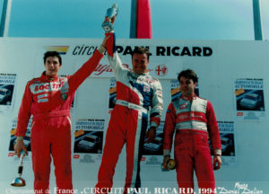

Vous pouvez tourner seul pendant des années sans progresser. Ou passer une journée avec JB et comprendre ce que vous faites — vraiment.
Vous stagnez depuis des années sans savoir pourquoi. JB vous dit exactement ce qui se passe — et comment le corriger dès la session suivante.
Vous avez des chronos, pas les résultats que vous méritez. JB a couru au même niveau, sous la même pression. Il voit ce que vous ne voyez pas depuis le volant.
Ce que je vous dis, je l'ai vécu en compétition. Chaque point que j'observe depuis le bord de piste, j'ai eu à le corriger moi-même — sous pression, avec un chrono.
JB présent toute la journée. Il observe depuis le bord, chronomètre, debriefe entre chaque session.
Envoyez votre embarquée. Analyse image par image — rapport complet sous 48h, n'importe quel circuit.
Week-end complet. JB dans votre stand vendredi → dimanche — qualif, stratégie, course, debrief.
"Juste un message pour dire merci pour la journée au Luc. Première journée pour moi et c'était vraiment super, autant niveau organisation que niveau ambiance. Je reviendrai. Merci à JB EMERIC."
"Super journée. Le circuit du Luc était top et le personnel à notre écoute !"
"J'ai passé une super journée inoubliable avec Jean-Baptiste Emeric qui est très sympathique et très compétent pour vous faire progresser dans le pilotage automobile en toute sécurité."
Toutes les prestations disponibles sur la boutique officielle — karting, stages voiture, coaching, loges.